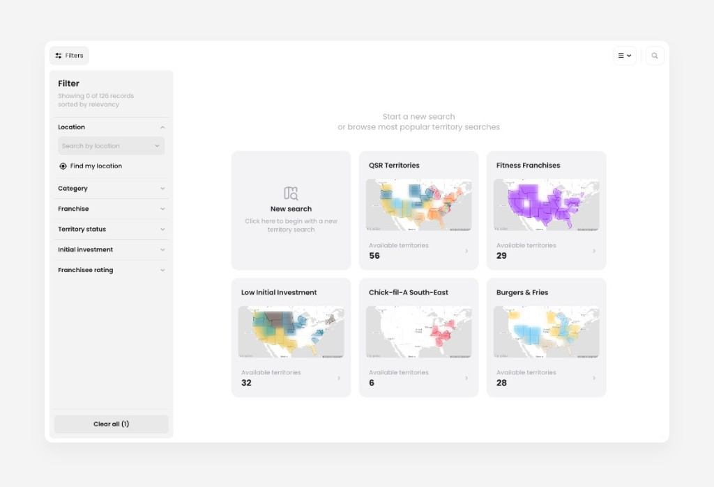
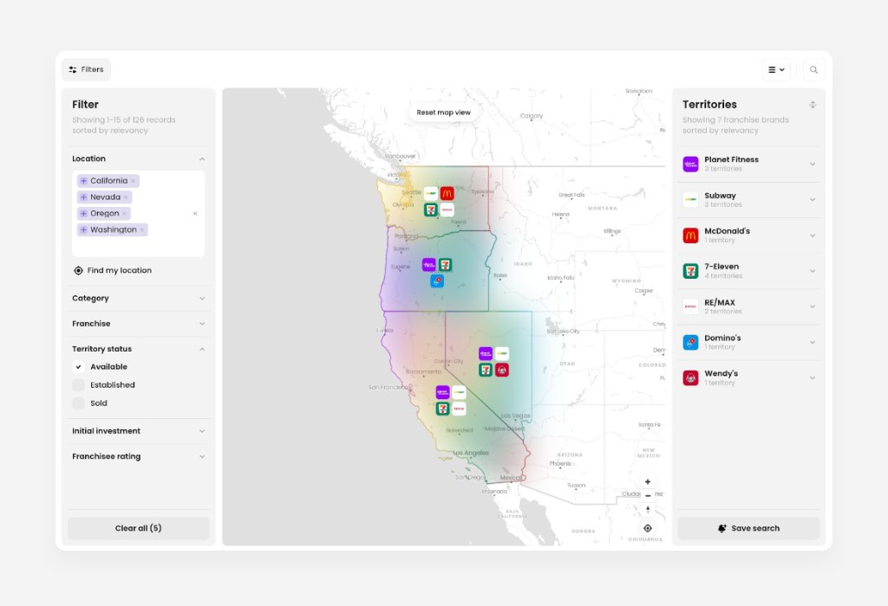
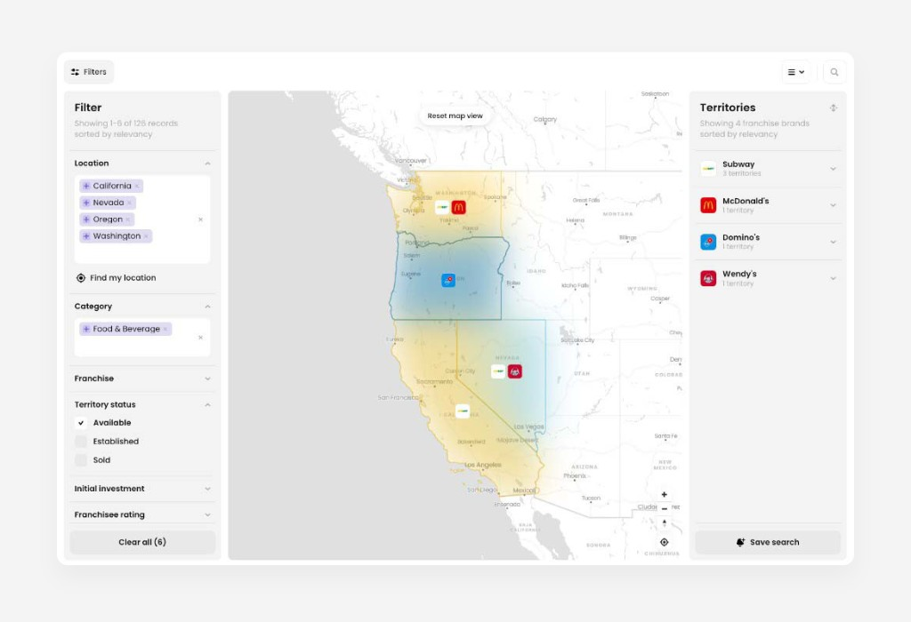
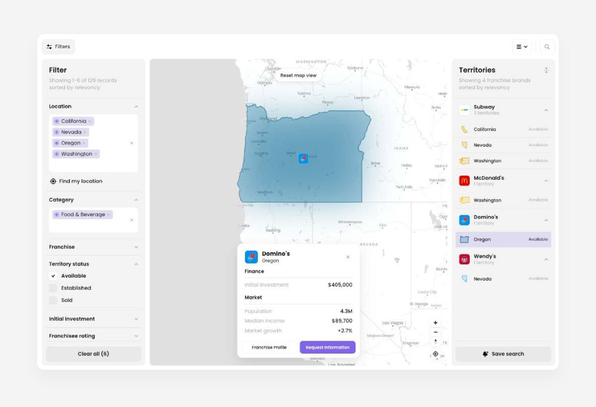

Start a new search
Territories opens on a set of popular searches — QSR in the South-East, Fitness in California, Chick-fil-A South-East, and a few others. Click New search for a blank map instead.

Filter by location
Add Washington, Oregon, California and Nevada under Location. The map fills in with every available territory across those four states — seven brands in total.

Filter by category
Add Food & Beverage. Seven brands become four: Subway (3 territories), McDonald's, Domino's and Wendy's (1 each) — six territories in total.

Compare investment
Click each territory to open its detail card — initial investment, population, median income, market growth. Here's all six, low to high:

| Brand | Territory | Investment | Growth |
|---|---|---|---|
| Subway | Nevada | $365,000 | +4.9% |
| Subway | Washington | $385,000 | +3.6% |
| Domino's | Oregon | $405,000 | +2.7% |
| Subway | California | $445,000 | +2.4% |
| McDonald's | Washington | $2,525,000 | +3.6% |
| Wendy's | Nevada | $2,875,000 | +4.9% |
Domino's Oregon, highlighted above, is the one opened in the screenshot.
Two clear tiers: Subway and Domino's under $450K, McDonald's and Wendy's above $2.5M. Nevada has both the cheapest territory and one of the priciest — investment is a brand question as much as a location one.
Why it matters
Two filters turn 126 records into six comparable territories. Investment and market data sit in the same card, so the split between low- and high-investment brands is obvious before requesting information from anyone.
Screens shown are from the Territories prototype using sample data.